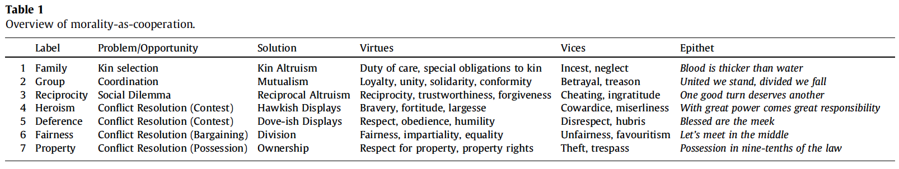

"What is morality? And to what extent does it vary around the world? The theory of “morality-as-cooperation” argues that morality consists of a collection of biological and cultural solutions to the problems of cooperation that arise in human social life. It draws on the theory of non-zero-sum games and predicts that specific forms of cooperative behavior —
— will be considered morally good wherever they arise, in all cultures. To test these predictions, we investigate the moral valence of these seven cooperative behaviors in the ethnographic records of 60 societies."
Allocation of Resources to Kin (Family Values).
Genes that benefit replicas of themselves in other individuals — that is, genetic relatives — will be favored by natural selection if the cost of helping is outweighed by the benefit to the recipient gene(s). So, under some conditions organisms will possess adaptations for detecting and delivering benefits (or avoiding doing harm) to kin.
This theory of kin selection explains many instances of altruism, in many species, including humans. Morality-as-cooperation leads us to expect that this type of cooperative behavior — caring for offspring, helping family members, and avoiding inbreeding — will be regarded as morally good.
Coordination to Mutual Advantage (Group Loyalty).
Game theory models situations in which individuals are uncertain about how to behave to bring about a mutual benefit as coordination problems. Humans and other animals use a variety of strategies — such as focal points, traditions, leadership, signaling, badges of membership, and “theory of mind” — to solve these problems and form stable coalitions and alliances.
Morality-as-cooperation leads us to expect that this type of cooperative behavior — forming friendships, participating in collaborative endeavors, favoring your own group, and adopting local conventions — will be regarded as morally good.
Social Exchange (Reciprocity).
In game theory, social dilemmas — prisoners’ dilemmas, public goods games, tragedies of the commons — arise when the fruits of cooperation are vulnerable to exploitation by “free riders”, who accept the benefit of cooperation without paying the cost. This problem can be overcome by a strategy of “conditional cooperation” or “reciprocal altruism,” such as tit-for-tat.
Morality-as-cooperation leads us to expect that this type of cooperative behavior — trusting others, reciprocating favors, seeking revenge, expressing gratitude, and making amends — will be regarded as morally good.
Contests between Hawks (Bravery) and Doves (Respect).
Conflict over resources — food, territory, and mates — presents organisms with an opportunity to cooperate by competing in less mutually destructive ways. There are three ways of achieving this:
Game theory has shown that conflicts can be settled through “contests,” in which individuals display reliable indicators of their “fighting ability,” and defer to the stronger party.
Morality-as-cooperation leads us to expect that these types of cooperative behavior — hawkish displays of dominance (the “heroic virtues” of bravery, fortitude, skill, and wit) and dovish displays of submission (the “monkish virtues” of humility, deference, obedience, and respect) — will be regarded as morally good.
Division (Fairness).
When the contested resource is divisible, game theory models the situation as a “bargaining problem”. Here, one solution is to divide the resource in proportion to the relative (bargaining) power of the protagonists. Rules such as “I cut, you choose,” “meet in the middle,” “split the difference,” and “take turns” are ancient and widespread means of resolving disputes. And “equal shares” is a spontaneous and cross-culturally prevalent decision rule in economic games and similar situations.
Morality-as-cooperation leads us to expect that this type of cooperative behavior — dividing disputed resources, reaching a compromise, being fair — will be regarded as morally good.
Possession (Property Rights).
Finally, game theory shows that conflicts over resources can be resolved by recognition of prior possession. Humans defer to prior possession in vignette studies, experimental games, the law, and international relations. Private property, in some form or other, appears to be a cross-cultural universal.
Morality-as-cooperation leads us to expect that this type of cooperative behavior — deferring to prior possession — will be regarded as morally good.
Although much evidence for the universality of cooperation had been gathered before, the previous studies were not designed to, and indeed do not, test fully morality-as-cooperation’s specific predictions. Comparative anthropology has not systematically assessed the moral valence of all seven forms of cooperative behavior: moral values relating to hawkish and dovish traits in the adult population, and dividing disputed resources, are conspicuously absent from the literature.
And no previous questionnaire research has evaluated all seven types of cooperative behavior posited by the theory: existing scales typically measure something other than moral valence (e.g., they ask whether a person or a society possesses a particular trait, rather than whether the trait is moral); and the disparate samples are typically university students, or people in Western, educated, industrialized, rich, democratic (WEIRD) societies, or people with access to the internet, which limits their external validity and generalizability to “humanity” at large.
And so, to test our predictions, to overcome the limitations of previous research, and to resolve lingering uncertainty over cross-cultural variation in moral values, we surveyed the moral valence of the seven cooperative behaviors in a single, homogenous, coherent source of high-quality ethnographic data, collected from a sample of 60 societies specifically chosen to provide as representative a sample of humanity as possible.
In addition to reporting the moral valence of these cooperative behaviors, we also report their cross-societal frequency and distribution. After all, it is possible that even if morality-as-cooperation’s predictions regarding the moral valence of cooperative behaviors are supported, these behaviors and their corresponding moral values may still turn out to be rare, present in relatively few societies, or in only some regions but not others.
First, we extracted paragraph-level ethnographic materials indexed by professional anthropologists for the eHRAF as Ethics or Norms. The extraction extraction of materials indexed as Ethics resulted in 2,519 paragraphs from 400 documents across the 60 societies sampled. The extraction of materials indexed as Norms resulted in 1,605 paragraphs from 263 discrete documents across 58 of the societies sampled.
Second, the entire archive was searched using a combination of relevant indexical headings (e.g., “Mutual Aid”) and keyword combinations. This phase identified 1,737 paragraphs from 355 discrete documents across the 60 societies. When duplicate paragraphs were removed (i.e., 2,401 paragraphs identified in more than one phase), we were left with a total of 3,460 paragraphs, containing 606,556 words, from 603 unique sources, published over a period spanning 300 years.
The coding procedure involved making 24,220 (3,460 \(\times\) 7) coding decisions — that is, deciding whether or not each of the 3,460 paragraphs indicated that any of the seven cooperative behaviors had a positive or negative moral valence. Raters 1 and 2 (two of the authors) independently coded the full set of 3,460 paragraphs and then conferred to resolve ambiguities and discrepancies. This resulted in a total of 1,426 paragraphs that contained material germane to one or more moral domain.
A hypothesis-blind independent coder (rater 3) then coded each of these 1,426 paragraphs before discussing coding discrepancies with raters 1 and 2. Of the 1,426 \(\times\) 7 = 9,982 initial coding decisions compared between the two sets of codes, there were 8,704 decisions in agreement and 1,278 decisions on which the raters disagreed—thus there was “moderate” agreement between the two initial sets of ratings overall (\(\kappa = .58, P < .005\)).
Raters 1, 2, and 3 then met to discuss and analyze discrepancies using the resolution method. On closer inspection it was discovered that the poor level of agreement with regard to “dividing disputed resources” was the result of rater 3 including cases of generic “sharing.” These and other rating discrepancies were reviewed and resolved until complete agreement was reached (\(\kappa = 1\)). In the final analysis, of the 3,460 paragraphs reviewed, 761 contained information about the moral valence of one or more of the seven cooperative behaviors. This gave rise to 962 observations of moral valence in total.
The instructions to coders: “Please read through the following paragraphs. Your task is to decide, for each paragraph, whether it contains evidence that any of seven behaviors explained in table 1 is considered morally good or bad. ‘Moral goodness’ may be indicated by comments to the effect that the particular behavior is good, right,moral, ethical, or virtuous, or that it is an obligation, duty, or moral norm, and so on. It may also be indicated by morally-valenced words. For example, the mere mention of ‘family loyalty,’ or ‘property rights’ would suffice. Moral goodness can also be indicated by evidence that not performing the particular behavior is bad, wrong, immoral or unethical, etc. Similarly, moral badness maybe indicated by comments to the effect that the particular behavior is bad, wrong, immoral, unethical, or sinful, or that it is taboo, shameful, prohibited, and so on. If there is evidence that the particular behavior is considered morally good, then type ‘\(1\)’ in the adjacent box. If the behavior is considered morally wrong, then type ‘\(-1\).’ Please bear in mind that any given paragraph may contain evidence that several different behaviors are considered moral (or immoral).”
Number of paragraphs in ethnographic records attesting to the moral valence of cooperation.
In 961 out of 962 observations (99.9%), cooperative behavior had a positive moral valence. The one exception to the rule — among the Chuuk, “to steal openly from others is admirable in that it shows a person’s dominance and demonstrates that he is not intimidated by the aggressive powers of others” — appears to be a case in which one form of cooperation (respect for property) has been trumped by another (respect for a hawkish trait, although not explicitly bravery).
There were 18 other examples of these seven moral values coming into conflict: nine examples of conflict between helping family and helping group; two of conflict between helping family and being brave; two of conflict between helping family and deferring to authority; and one example each of conflict between helping family and reciprocating, helping group and being brave, reciprocating and being brave, being brave and being deferential, and being deferential and respecting possession. However, in these cases, the moral values were portrayed as being in conflict, rather than one being good and the other bad.
Percentage of societies in which positively morally valenced cooperative behavior was observed.
There were significantly more societies in which “property” was observed than “bravery,” “respect,” and “fairness”; and there were significantly fewer societies in which “fairness” was observed than all other types of moral behavior. All other differences were nonsignificant. There were no societies in which any of the seven cooperative behaviors had a negative moral valence. (The “exception” reported above was itself an exception—seven other paragraphs attested to the positive moral valence of property among the Chuuk).
When aggregated by cultural region, all seven positively morally valenced cooperative behaviors were observed in all six regions — with the sole exception of “dividing disputed resources” in Central America (for which there were no data). Crucially, the positively morally valenced cooperative behaviors were observed with equal frequency in all regions.
A survey of 60 diverse societies found that the moral valence of seven cooperative behaviors was uniformly positive. In every society for which there were data, these seven cooperative behaviors behaviors were considered morally good. There were no counterexamples, that is, societies in which these behaviors were considered morally bad. The survey also found that these cooperative morals were widespread — with most appearing in most societies — and that they were observed with equal frequency across all cultural regions.
As such, these results provide strong support for the theory of morality-as-cooperation, and no support for the more extreme versions of moral relativism. In short, Hume was right, and Locke was wrong. When you “look abroad into the several tribes of men” there are some widely held morals that are not elsewhere “slighted or condemned,” and they include precisely those morals predicted by morality-as-cooperation. As Hume (1748) put it: “history informs us of nothing new or strange in this particular.”
Morality-as-Cooperation (MAC) is the theory that morality is a collection of biological and cultural solutions to the problems of cooperation recurrent in human social life. MAC uses game theory to identify distinct types of cooperation, and predicts that each will be considered morally relevant, and each will give rise to a distinct moral domain. Here we test MAC’s predictions by developing a new self-report measure of morality, the Morality-as-Cooperation Questionnaire (MAC-Q), and comparing its psychometric properties to those of the Moral Foundations Questionnaire (MFQ). Over four studies, the results support the MAC-Q’s seven-factor model of morality, but not the MFQ’s five-factor model. Thus MAC emerges as the best available compass with which to explore the moral landscape.
Moral Foundations Theory proposes that several innate and universal psychological systems are the foundations of “intuitive ethics.” Each culture then constructs virtues, narratives, and institutions on top of these foundations, thereby creating unique moralities, which differ across the world and within nations. The five foundations for which we [Haidt et al.] think the evidence is best are:
The results support MAC’s prediction about the content of morality, namely that each of the seven types of cooperation would be considered morally relevant. Indeed, the four new domains uniquely predicted by MAC (family, reciprocity, heroism, property) were considered more relevant than domains shared with MFT (group, deference, fairness).
The results also support MAC’s predictions regarding the structure of morality, namely that each of the seven types of cooperation would constitute a distinct domain. Exploratory factor analysis delivered the predicted seven factors, on both the Relevance and Judgement scales. And confirmatory factor analysis demonstrated that the seven factor model was a good fit for both scales, separately and combined.
The results of this study support MFT’s claim that the contents of the five foundations are considered morally relevant. As such, the results support MAC’s prediction that cooperative behaviour relating to groups, deference and fairness (as well as the general category of ‘care’) will be regarded as morally relevant; but they appear to contradict MAC’s prediction that ‘purity’ will not be considered morally relevant.
However, the results do not support MFT’s proposed five-factor structure of morality. Consistent with previous research, the overall internal reliability of the scale was low. Exploratory factor analysis did not yield the predicted five factors, on either Relevance or Judgement scales. (Nor did it reliably reveal the two ‘individualising’ and ‘binding’ factors.) Confirmatory analysis demonstrated that none of the five-factor models achieved a good fit on all criteria, either separately or when combined. Specifically, the MFQ was not able to distinguish between moral attitudes relating to groups and deference; Ingroup and Authority items loaded on the same factor. Nor was the MFQ able to distinguish attitudes to fairness; Fairness items loaded on the same factor as Care. Neither Care nor Purity emerged as distinct factors on the Relevance scale, only Purity was a distinct factor on the Judgement scale.
Thus MFT’s predictions were not supported. The MFQ was not able to identify the domains uniquely predicted by MFT (Care and Purity), and the MFQ not able to distinguish the domains (groups, deference and fairness) predicted by both MFT and MAC.
Taken together, the results of Studies 1 and 2 provide further support for MAC.
"We have shown how the mathematics of cooperation – derived from evolutionary biology and nonzero sum game theory – can be used to develop this theory; and by identifying seven candidate types of cooperative behaviour, we have extended the theory to incorporate and explain more aspects of morality than previous cooperative accounts."
"Egalitarian society is 'explained' chiefly in terms of ecological or social factors that are self-organizing. However, egalitarian behavior is found in a wide variety of social and ecological settings, and the indications are that such societies are deliberately shaped by their members. This paper looks to egalitarian behavior as an instance of domination of leaders by their own followers, who are guided by an ethos that disapproves of hierarchical behavior in general and of bossiness in leaders in particular. A substantial cross-cultural survey reveals the specific mechanisms by which the political rank and file creates a reverse dominance hierarchy, an anomalous social arrangement which has important implications for cross-phylogenetic comparisons and for the theory of state formation."
Egalitarian societies remain something of an ethnological mystery:
"My intention is to resolve the first question by explaining egalitarian behavior on the basis of a single hypothesis that is both political and psychological. In doing so, I shall demonstrate that egalitarian communities are not so unlike those of other humans (and of the African great apes) as has been assumed in the extensive literature on 'egalitarian society.'"
"Egalitarian society" was originally defined chiefly in terms of what was known about the small-scale nomadic foraging societies that so obviously contrasted with centralized polities. ... a readily recognized air of "equality" prevailed among adult males and at best leaders had little authority or economic advantage.
"An impressive list of automatic leveling mechanisms":
None of these mechanisms provides the basis for a general theory of leveling in traditional societies of small scale — "bands" and "tribes." ... Thus, over several decades of study, anthropologists have developed no unified theory for explaining egalitarian behavior.
[Boehm 1982] emphasized the causal role of intentions, suggesting that egalitarian political styles developed only after the emergence of the human capacity for purposeful, moralistic sanctioning. [The] general evolutionary interpretation was based on extant egalitarian societies and was not limited to foragers, and in a sense it reinterpreted "egalitarian society." In short, it suggested that an apparent absence of hierarchy was the result of followers dominating their leaders rather than vice versa.
Here a similar line of argument is pursued, with new evidence from an informal but rather extensive world survey of societies that exhibit the effects of "reverse dominance hierarchy".
The hypothesis: the primary cause of egalitarian behavior is a moralistic determination on the part of a local group’s main political actors that no one of its members should be allowed to dominate the others.
Data assessment limited to actual group decisions with their reasons and their consequences.
Rather than restricting the survey to bands and "acephalous" tribes, consider all locally autonomous small-scale communities with low stratification by class and an absence of authoritative leadership.
The object was to see whether intentional behavior (notably, social sanctioning) that had a leveling effect was widespread in such societies and, more specifically, whether it had any significant effects in suppressing the growth of authoritative leadership; seek to detect presence or absence of "egalitarian behavior," that is, any intentional behavior that decisively suppressed hierarchical relations among adults as political actors.
A basic criterion was that the societies be politically autonomous, since peasants and subject peoples are not really free to define their own political lives. Also interested in seeing whether there might be any small-scale, weakly stratified societies that nevertheless exhibited very strong leadership and, if so, whether an egalitarian ethos or attempts at egalitarian sanctioning coexisted with such phenomena.
Because of the paucity of detailed reports on interactions between leaders and followers, [Boehm] decided to forego statistical sampling and look for any piece of evidence or substantial clue that might help to support or falsify my hypothesis. Out of approximately 200 politically autonomous societies that were surveyed, about half simply provided no details as to specific dominance interactions of leaders and followers or about the tenor of dominance behavior within the group, while perhaps half that number provided mere hints (e.g., "leaders always were unassuming" or "leaders seem to avoid giving commands").
Four dozen [reports] contained solid and reliable evidence with respect to the specific politically insightful intentional behaviors that shaped the social and political roles of leading adults in their local communities. Thus, about one ethnography in four was fully eligible.
The "reading" of indigenous intentions is one of ethnology’s most difficult tasks. [...] Because [Boehm] felt the research question to be an important one, [he] took into account any trustworthy and relevant description in which local autonomy was basically intact and in which contact effects on political behavior were limited and could be reasonably well accounted for.
Of the 48 societies reporting intentional behavior to control negatively evaluated tendencies of leaders (table I), 12 come from North America, II from Central and South America, 9 from Africa, 2 from the Mediterranean / Mideast, 5 from Asia, 2 from Oceania, 4 from New Guinea, and 3 from Australia.
A striking feature of these reports is that assassination is reported in 11 societies out of the 48. [...] In all, behaviors that terminated relations with an overly assertive individual or removed him from a leadership role involved 38 of the 48 societies.
"The data do leave us with some ambiguities, but I believe that as of 40,000 years ago, with the advent of anatomically modern humans who continued to live in small groups and had not yet domesticated plants and animals, it is very likely that all human societies practiced egalitarian behavior and that most of the time they did so very successfully."
One major conclusion, then, is that intentional leveling linked to an egalitarian ethos is an immediate and probably an extremely widespread cause of human societies’ failing to develop authoritative or coercive leadership. This is a psychological interpretation. A "material" factor that seems to correlate universally with absence of such leadership is smallness of social scale. [...] This is a hypothesis worthy of testing.
Prudent leaders set aside their own tendencies to dominate and submit to their groups even as they lead them. [...] The social result of this interaction is a consensus-oriented community, a group that cooperates well and that remains small because in the absence of strong leadership it so readily subdivides. The resulting unity of purpose makes it possible for all or most members of local communities to unite against leaders and, by threat of disapproval or active sanctioning, circumscribe their role. These would seem to be the personal and social dynamics that keep a typical egalitarian society in place. One aspect of these dynamics is an egalitarian ethos, both a cause and an effect of the ambivalences just discussed.
From The art of not being governed: an anarchist history of upland Southeast Asia (p.3):
Zomia: the highlands of Asia, from the western Himalayan Range through the Tibetan Plateau and all the way to the lower end of the peninsular Southeast Asian highlands — a political and historical entity significantly distinct from the usual area divisions of Asia; a neglected – an invisible – transnational area, marked by a sparse population, historical isolation, political domination by powerful surrounding states, marginality of all kinds, and huge linguistic and religious diversity.
Last modified: Mon Feb 15 2021 at 10:42:02 EST